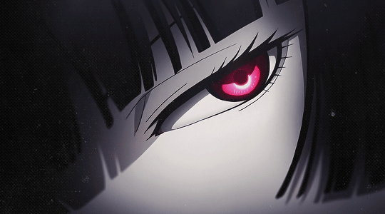
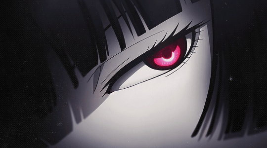

haru
hi cutie click below
access private biolink, dm @hzvp on cord for access
hi cutie click below
access @hzvp for a slot.
access@hzvp for a slot.
access@hzvp for a slot.
access@hzvp for a slot.
Watch now@hzvp for a slot.
access@hzvp for a slot.
access